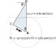

Calculations for the position of the sun and moon

Astral is a typescript package for calculating the times of various aspects of the sun and phases of the moon.
It can calculate the following
- Dawn
- The time in the morning when the sun is a specific number of degrees below the horizon.
- Sunrise
- The time in the morning when the top of the sun breaks the horizon (asuming a location with no obscuring features.)
- Noon
- The time when the sun is at its highest point directly above the observer.
- Midnight
- The time when the sun is at its lowest point.
- Sunset
- The time in the evening when the sun is about to disappear below the horizon (asuming a location with no obscuring features.)
- Dusk
- The time in the evening when the sun is a specific number of degrees below the horizon.
- Daylight
- The time when the sun is up i.e. between sunrise and sunset
- Night
- The time between astronomical dusk of one day and astronomical dawn of the next
- Twilight
- The time between dawn and sunrise or between sunset and dusk
- The Golden Hour
- The time when the sun is between 4 degrees below the horizon and 6 degrees above.
- The Blue Hour
- The time when the sun is between 6 and 4 degrees below the horizon.
- Time At Elevation
- The time when the sun is at a specific elevation for either a rising or a setting sun.
- Solar Azimuth
- The number of degrees clockwise from North at which the sun can be seen
- Solar Zenith
- The angle of the sun down from directly above the observer
- Solar Elevation
- The number of degrees up from the horizon at which the sun can be seen
- Rahukaalam
- Rahukaalam or the period of Rahu is a certain amount of time every day that is considered inauspicious for any new venture according to Indian Vedic astrology".
- Moon Phase
- The phase of the moon for a specified date.
Astral also comes with a geocoder containing a local database that allows you to look up information for a small set of locations, new locations can be added.
Examples
The following examples demonstrates some of the functionality available in the module
Sun
> import { DateTime } from "luxon";
> import { LocationInfo } from "astral";
> let city = new LocationInfo("London", "England", "Europe/London", 51.5, -0.116);
> console.log(
... `Information for ${city.name}/${city.region}
... Timezone: ${city.timezone}
... Latitude: ${city.latitude}; Longitude: ${city.longitude}
... `);
Information for London/England
Timezone: Europe/London
Latitude: 51.50; Longitude: -0.116
> import { DateTime } from "luxon";
> import { sun } from "astral/sun";
> let s = sun(city.observer, DateTime.fromObject({year: 2009, month: 4, day: 22}));
> console.log(
... `Dawn: ${s["dawn"].toISO()}
... Sunrise: ${s["sunrise"].toISO()}
... Noon: ${s["noon"].toISO()}
... Sunset: ${s["sunset"].toISO()}
... Dusk: ${s["dusk"].toISO()}`
... );
Dawn: 2009-04-22T04:13:04.923Z
Sunrise: 2009-04-22T04:50:16.515Z
Noon: 2009-04-22T11:59:02.000Z
Sunset: 2009-04-22T19:08:41.215Z
Dusk: 2009-04-22T19:46:06.362ZMoon
> import { DateTime } from "luxon";
> import { phase } from "astral/moon";
> console.log(phase(DateTime.fromObject({year: 2018, month: 1, day: 1})));
13.255666666666668The moon phase method returns an number describing the phase, where the value is between 0 and 27.99. The following lists the mapping of various values to the description of the phase of the moon.
| Value | Phase |
|---|---|
| 0 .. 6.99 | New moon |
| 7 .. 13.99 | First quarter |
| 14 .. 20.99 | Full moon |
| 21 .. 27.99 | Last quarter |
If for example the number returned was 27.99 then the moon would be almost at the New Moon phase, and if it was 24.00 it would be half way between the Last Quarter and a New Moon.
Note: The moon phase does not depend on your location. However what the moon actually looks like to you does depend on your location. If you're in the southern hemisphere it looks different than if you were in the northern hemisphere.
See http://moongazer.x10.mx/website/astronomy/moon-phases/ for further information.
Geocoder
> import { database, lookup } from "astral/geocoder";
> console.log(lookup("London", database()));
LocationInfo {
name: 'London',
region: 'England',
timezone: 'Europe/London',
latitude: 51.473333333333336,
longitude: -0.0008333333333333334
}Custom Location
If you only need a single location that is not in the database then you can
construct a LocationInfo and fill in the values, either on
initialization
import { LocationInfo } from "astral/index";
let l = new LocationInfo('name', 'region', 'timezone/name', 0.1, 1.2);or set the attributes after initialization::
import { LocationInfo } from "astral/index";
let l = new LocationInfo();
l.name = 'name';
l.region = 'region';
l.timezone = 'US/Central';
l.latitude = 0.1;
l.longitude = 1.2;Note: name and region can be anything you like.
Additional Locations
You can add to the list of available locations using the
add_locations function and passing either a string with
one line per location or by passing an Array containing strings, Arrays or tuples
(lists and tuples are passed directly to the LocationInfo constructor).
> import { addLocations, database, lookup } from "astral/geocoder";
> let db = database();
> try {
... lookup("Somewhere", db);
... }
... catch(err) {
... console.log(err.msg);
... }
...
Location or group "Somewhere" not found in database
> addLocations("Somewhere,Secret Location,UTC,24°28'N,39°36'E", db);
> console.log(lookup("Somewhere", db));
LocationInfo {
name: 'Somewhere',
region: 'Secret Location',
timezone: 'UTC',
latitude: 24.466666666666665,
longitude: 39.6
}Timezone Groups
Timezone groups such as Europe can be accessed via the group function in
the geocoder module
> import { group } from "astral/geocoder";
> let europe = group("europe");
> console.log(Object.keys(europe).sort());
['aberdeen', 'amsterdam', 'andorra_la_vella', 'ankara', 'athens', ...]Effect of Elevation
Times Of The Sun
The times of the sun that you experience depend on what obscurs your view of it. It may either be obscured by the horizon or some other geographical feature (e.g. mountains)
If what obscures you at ground level is the horizon and you are at a elevation above ground level then the times of the sun depends on how far further round the earth you can see due to your elevation (the sun rises earlier and sets later).
The extra angle you can see round the earth is determined by calculating the angle α in the image below based on your elevation above ground level, and adding this to the depression angle for the sun calculations.
If your view is obscured by some other geographical feature than the horizon, then the adjustment angle is based on how far you are above or below the feature and your distance to it.
For the first case i.e. obscured by the horizon you need to pass a single number to the Observer as its elevation. For the second case pass a tuple of 2 numbers. The first being the vertical distance to the top of the feature and the second the horizontal distance to the feature.
Elevation Of The Sun
Even though an observer's elevation can significantly affect the times of the sun the same is not true for the elevation angle from the observer to the sun.
As an example the diagram below shows the difference in angle between an observer at ground level and one on the ISS orbiting 408 km above the earth.
The largest difference between the two angles is when the angle at ground level is 1 degree. The difference then is approximately 0.15 degrees.
At the summit of mount Everest (8,848 m) the maximum difference is 0.00338821 degrees.
Due to the very small difference the astral package does not currently adjust the solar elevation for changes in observer elevation.
Effect of Refraction
When viewing the sun the position you see it at is different from its actual position due to the effect of atmospheric refraction which makes the sun appear to be higher in the sky. The calculations in the package take this refraction into account.
The sunrise and sunset functions use the
refraction at an angle when the sun is half of its apparent diameter below the
horizon. This is between about 30 and 32 arcminutes and for the astral package a
value of 32" is used.
Note: The refraction calculation does not take into account temperature and pressure which can affect the angle of refraction.
License
This module is licensed under the terms of the Apache V2.0 license.
Dependencies
Astral has one required external dependency on luxon.
Installation
To install Astral you should use the npm tool:
npm install @sffjunkie/astralCities
The module includes location and time zone data for the following cities. The list includes all capital cities plus some from the UK. The list also includes the US state capitals and some other US cities.
Aberdeen, Abu Dhabi, Abu Dhabi, Abuja, Accra, Addis Ababa, Adelaide, Al Jubail, Albany, Albuquerque, Algiers, Amman, Amsterdam, Anchorage, Andorra la Vella, Ankara, Annapolis, Antananarivo, Apia, Ashgabat, Asmara, Astana, Asuncion, Athens, Atlanta, Augusta, Austin, Avarua, Baghdad, Baku, Baltimore, Bamako, Bandar Seri Begawan, Bangkok, Bangui, Banjul, Barrow-In-Furness, Basse-Terre, Basseterre, Baton Rouge, Beijing, Beirut, Belfast, Belgrade, Belmopan, Berlin, Bern, Billings, Birmingham, Birmingham, Bishkek, Bismarck, Bissau, Bloemfontein, Bogota, Boise, Bolton, Boston, Bradford, Brasilia, Bratislava, Brazzaville, Bridgeport, Bridgetown, Brisbane, Bristol, Brussels, Bucharest, Bucuresti, Budapest, Buenos Aires, Buffalo, Bujumbura, Burlington, Cairo, Canberra, Cape Town, Caracas, Cardiff, Carson City, Castries, Cayenne, Charleston, Charlotte, Charlotte Amalie, Cheyenne, Chicago, Chisinau, Cleveland, Columbia, Columbus, Conakry, Concord, Copenhagen, Cotonou, Crawley, Dakar, Dallas, Damascus, Dammam, Denver, Des Moines, Detroit, Dhaka, Dili, Djibouti, Dodoma, Doha, Douglas, Dover, Dublin, Dushanbe, Edinburgh, El Aaiun, Fargo, Fort-de-France, Frankfort, Freetown, Funafuti, Gaborone, George Town, Georgetown, Gibraltar, Glasgow, Greenwich, Guatemala, Hanoi, Harare, Harrisburg, Hartford, Havana, Helena, Helsinki, Hobart, Hong Kong, Honiara, Honolulu, Houston, Indianapolis, Islamabad, Jackson, Jacksonville, Jakarta, Jefferson City, Jerusalem, Juba, Jubail, Juneau, Kabul, Kampala, Kansas City, Kathmandu, Khartoum, Kiev, Kigali, Kingston, Kingston, Kingstown, Kinshasa, Koror, Kuala Lumpur, Kuwait, La Paz, Lansing, Las Vegas, Leeds, Leicester, Libreville, Lilongwe, Lima, Lincoln, Lisbon, Little Rock, Liverpool, Ljubljana, Lome, London, Los Angeles, Louisville, Luanda, Lusaka, Luxembourg, Macau, Madinah, Madison, Madrid, Majuro, Makkah, Malabo, Male, Mamoudzou, Managua, Manama, Manchester, Manchester, Manila, Maputo, Maseru, Masqat, Mbabane, Mecca, Medina, Melbourne, Memphis, Mexico, Miami, Milwaukee, Minneapolis, Minsk, Mogadishu, Monaco, Monrovia, Montevideo, Montgomery, Montpelier, Moroni, Moscow, Moskva, Mumbai, Muscat, N'Djamena, Nairobi, Nashville, Nassau, Naypyidaw, New Delhi, New Orleans, New York, Newark, Newcastle, Newcastle Upon Tyne, Ngerulmud, Niamey, Nicosia, Norwich, Nouakchott, Noumea, Nuku'alofa, Nuuk, Oklahoma City, Olympia, Omaha, Oranjestad, Orlando, Oslo, Ottawa, Ouagadougou, Oxford, P'yongyang, Pago Pago, Palikir, Panama, Papeete, Paramaribo, Paris, Perth, Philadelphia, Phnom Penh, Phoenix, Pierre, Plymouth, Podgorica, Port Louis, Port Moresby, Port of Spain, Port-Vila, Port-au-Prince, Portland, Portland, Porto-Novo, Portsmouth, Prague, Praia, Pretoria, Pristina, Providence, Quito, Rabat, Raleigh, Reading, Reykjavik, Richmond, Riga, Riyadh, Road Town, Rome, Roseau, Sacramento, Saint Helier, Saint Paul, Saint Pierre, Saipan, Salem, Salt Lake City, San Diego, San Francisco, San Jose, San Juan, San Marino, San Salvador, Sana, Sana'a, Santa Fe, Santiago, Santo Domingo, Sao Tome, Sarajevo, Seattle, Seoul, Sheffield, Singapore, Sioux Falls, Skopje, Sofia, Southampton, Springfield, Sri Jayawardenapura Kotte, St. George's, St. John's, St. Peter Port, Stanley, Stockholm, Sucre, Suva, Swansea, Swindon, Sydney, T'bilisi, Taipei, Tallahassee, Tallinn, Tarawa, Tashkent, Tbilisi, Tegucigalpa, Tehran, Thimphu, Tirana, Tirane, Tokyo, Toledo, Topeka, Torshavn, Trenton, Tripoli, Tunis, Ulaanbaatar, Ulan Bator, Vaduz, Valletta, Vienna, Vientiane, Vilnius, Virginia Beach, W. Indies, Warsaw, Washington DC, Wellington, Wichita, Willemstad, Wilmington, Windhoek, Wolverhampton, Yamoussoukro, Yangon, Yaounde, Yaren, Yerevan, Zagreb
US Cities
Albany, Albuquerque, Anchorage, Annapolis, Atlanta, Augusta, Austin, Baltimore, Baton Rouge, Billings, Birmingham, Bismarck, Boise, Boston, Bridgeport, Buffalo, Burlington, Carson City, Charleston, Charlotte, Cheyenne, Chicago, Cleveland, Columbia, Columbus, Concord, Dallas, Denver, Des Moines, Detroit, Dover, Fargo, Frankfort, Harrisburg, Hartford, Helena, Honolulu, Houston, Indianapolis, Jackson, Jacksonville, Jefferson City, Juneau, Kansas City, Lansing, Las Vegas, Lincoln, Little Rock, Los Angeles, Louisville, Madison, Manchester, Memphis, Miami, Milwaukee, Minneapolis, Montgomery, Montpelier, Nashville, New Orleans, New York, Newark, Oklahoma City, Olympia, Omaha, Orlando, Philadelphia, Phoenix, Pierre, Portland, Portland, Providence, Raleigh, Richmond, Sacramento, Saint Paul, Salem, Salt Lake City, San Diego, San Francisco, Santa Fe, Seattle, Sioux Falls, Springfield, Tallahassee, Toledo, Topeka, Trenton, Virginia Beach, Wichita, Wilmington
Thanks
The sun calculations in this package were adapted from the spreadsheets on the following page.
https://www.esrl.noaa.gov/gmd/grad/solcalc/calcdetails.html
Refraction calculation is taken from
Sun-Pointing Programs and Their Accuracy
John C. Zimmerman Of Sandia National Laboratones
https://www.osti.gov/servlets/purl/6377969
Which cites the following as the original source
In Solar Energy Vol 20 No.5-C
Robert Walraven Of The University Of California, Davis
The moon phase calculation is based on some javascript code from Sky and Telescope magazine
Moon-phase calculation
Roger W. Sinnott, Sky & Telescope, June 16, 2006.
http://www.skyandtelescope.com/wp-content/observing-tools/moonphase/moon.html
Contact
Simon Kennedy sffjunkie+code@gmail.com